library(ggplot2)
set.seed(42)
n <- 100
x <- sort(runif(n, 0, 3))
y <- sin(x) + rnorm(n, 0, 0.1)
df <- data.frame(x = x, y = y)
ggplot(df, aes(x = x, y = y)) +
geom_point() +
ggtitle("Dataset sintetico: y = sin(x) + rumore")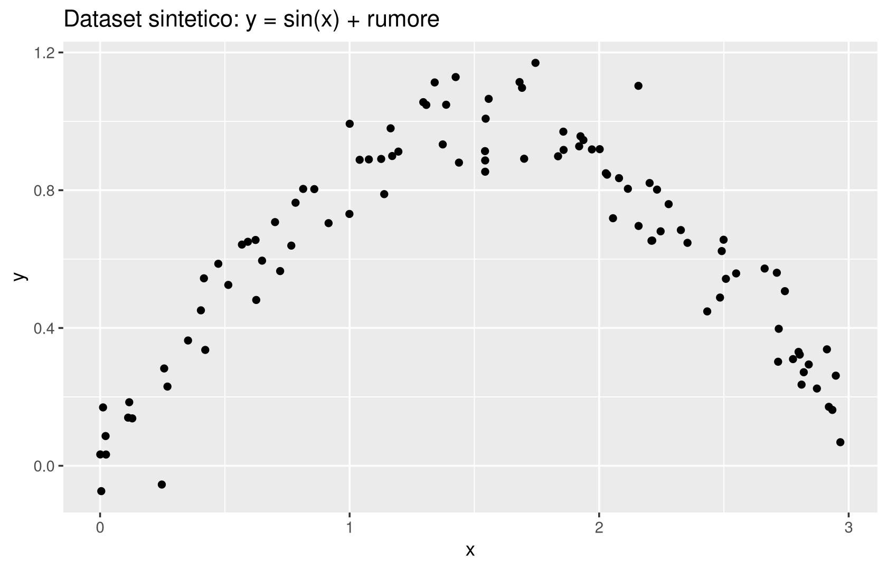
Al termine del capitolo dovresti essere in grado di:
Nel capitolo 4 abbiamo affrontato il problema della classificazione: dato un insieme di esempi \(\{(x_i,y_i)\}_{i=1}^n\), con \(y_i\) appartenente a un insieme discreto e piccolo di classi (spesso solo due), costruire una regola \(h\) che assegni la classe corretta a osservazioni nuove. Molte situazioni pratiche, però, chiedono di prevedere una quantità continua: il prezzo di una casa, la temperatura di domani, il voto di un esame, la durata di un processo. Cosa cambia, statisticamente, se la variabile che vogliamo prevedere smette di essere una classe e diventa un numero reale?
Sorprendentemente poco, dal punto di vista dell’impianto concettuale. Come si dice spesso a lezione, si può pensare alla classificazione come a un caso speciale della regressione, ottenuto quando l’insieme di uscita è un insieme finito (nel caso binario, \(\{-1,1\}\)); simmetricamente, la regressione estende la classificazione a un insieme continuo di “classi”. Tenere a mente questo ponte è utile per due ragioni: da un lato permette di riciclare quasi tutto quello che già sappiamo (training/test, validazione incrociata, bias-varianza); dall’altro aiuta a capire cosa deve essere effettivamente ridefinito — soprattutto la funzione di perdita, perché l’accuratezza 0/1 della classificazione non ha più senso quando l’uscita è un numero reale.
Il problema della regressione consiste, dato un insieme di osservazioni \[ \{(x_i,y_i)\}_{i=1,\ldots,n}, \] nel determinare un modello di regressione \[ h: F \to C, \qquad h(x) \approx y, \] dove \(x_i \in F\) sono le variabili di input e \(y_i \in C\) le variabili di output. L’ipotesi di lavoro è \(F \subseteq \mathbb{R}^d\) e \(C=\mathbb{R}^k\); per semplicità, in tutto questo capitolo prendiamo \(k=1\), cioè un’unica variabile di output reale.
Le variabili \(x_i\) hanno moltissimi sinonimi nella letteratura: fattori di ingresso, regressori, predittori, covariate, variabili esplicative, variabili indipendenti. Analogamente le \(y_i\) sono dette fattori di uscita, risposte, variabili dipendenti. In queste note preferiamo, quando possibile, la coppia fattori di ingresso / fattori di uscita.
Perché evitare “variabili indipendenti/dipendenti”? La terminologia è diffusissima e non è affatto sbagliata usarla, ma porta con sé un’insidia concettuale: suggerisce implicitamente un nesso di causa-effetto (la \(x\) “causa” la \(y\)), che in generale la regressione non dimostra e non presuppone. Un modello di regressione stima un’associazione statistica tra \(x\) e \(y\); se questa associazione rifletta davvero una relazione causale è una domanda diversa, che richiede assunzioni aggiuntive (si pensi alla distinzione tra correlazione e causalità già incontrata a proposito della correlazione di Pearson nel capitolo 3). “Fattori di ingresso/uscita” è una nomenclatura più neutra, che non prende posizione su questo punto.
Se \(C=\{-1,1\}\) siamo esattamente nel problema di classificazione binaria discusso nei capitoli 4 e 5: la regressione, in questo senso, è davvero una generalizzazione.
Una prima idea, ingenua ma istruttiva, è chiedere che \(h\) riproduca esattamente i dati osservati. Vediamo perché questa richiesta, pur sembrando la più naturale, è in realtà troppo forte, e cosa succede quando viene messa alla prova con dati rumorosi.
Un modello \(h\) interpola i dati \(\{(x_i,y_i)\}_{i=1}^n\) se \[ h(x_i) = y_i \quad \text{per ogni } i=1,\ldots,n. \]
Il problema dell’interpolazione è mal posto per i nostri scopi: se non specifichiamo altro, esistono infinite funzioni che passano esattamente per \(n\) punti dati (basta pensare a tutte le curve lisce che si possono far passare per un insieme finito di punti nel piano, oppure, più semplicemente, a un’interpolazione lineare a tratti, costruibile con una singola riga di codice R). Il fatto che una funzione “colga” esattamente i dati osservati non garantisce affatto che si comporti bene su un punto nuovo.
Generiamo un piccolo dataset sintetico — lo stesso useremo per tutto il capitolo — a partire da una curva nota (\(\sin(x)\)) più rumore gaussiano, così da poter confrontare i modelli con la “verità” che li ha generati.
library(ggplot2)
set.seed(42)
n <- 100
x <- sort(runif(n, 0, 3))
y <- sin(x) + rnorm(n, 0, 0.1)
df <- data.frame(x = x, y = y)
ggplot(df, aes(x = x, y = y)) +
geom_point() +
ggtitle("Dataset sintetico: y = sin(x) + rumore")
Prima di calcolare. Se collegassimo i punti in ordine di \(x\) con segmenti (interpolazione lineare a tratti), che tipo di curva ti aspetti? Sarà liscia o “a zig-zag”?
ggplot(df, aes(x = x, y = y)) +
geom_line(colour = "blue") +
geom_point() +
ggtitle("Interpolazione lineare a tratti")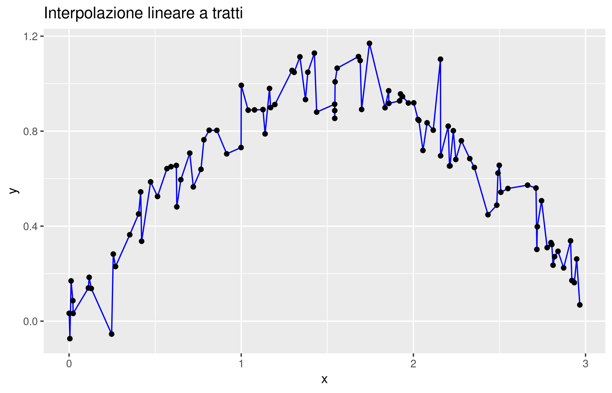
Dopo il calcolo. La curva insegue ogni singolo punto, comprese le sue oscillazioni dovute al rumore: è un comportamento coerente con la definizione di interpolazione, ma il risultato è visibilmente più irregolare della sinusoide che ha generato i dati.
Il problema si aggrava drasticamente in presenza di outlier. Perturbiamo pochi punti del dataset con uno scostamento molto grande:
set.seed(123)
y_out <- y + 2 * sample(c(-1, 0, 1), n, replace = TRUE, prob = c(0.02, 0.96, 0.02))
df_out <- data.frame(x = x, y = y_out)
ggplot(df_out, aes(x = x, y = y)) +
geom_line(colour = "blue") +
geom_point() +
ggtitle("Interpolazione con outlier")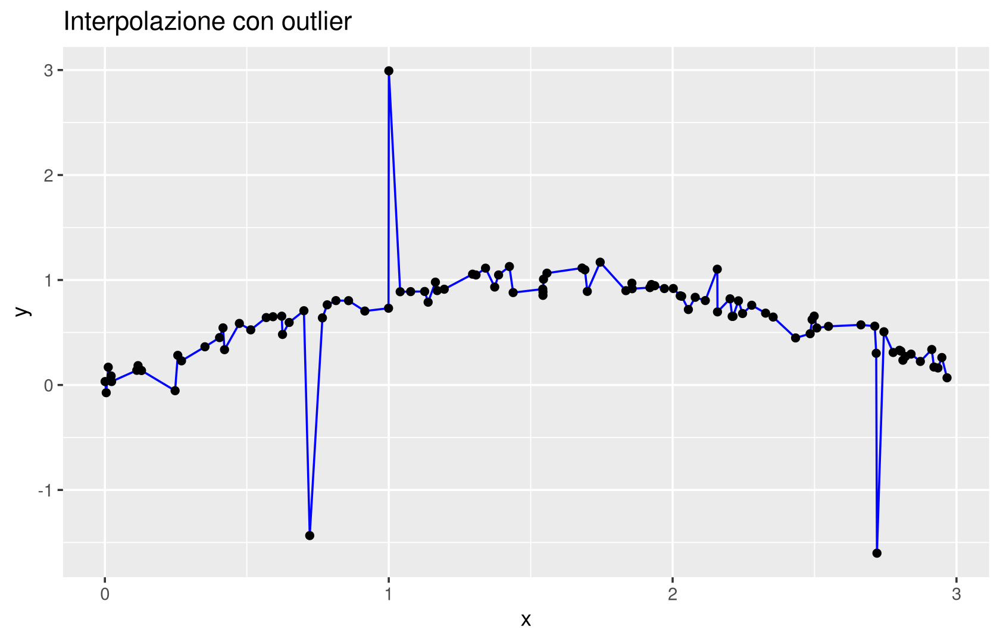
Guardando la curva con outlier, possiamo già anticipare il linguaggio bias/varianza che formalizzeremo più avanti nel capitolo. Il modello che interpola esattamente ha varianza troppo alta: insegue ogni singolo punto del training set, compresi gli scostamenti dovuti al rumore o a osservazioni anomale, e quindi cambierebbe moltissimo se ripetessimo l’esperimento con un altro campione di dati generato dalla stessa legge. Il suo bias, invece, è basso: essendo estremamente flessibile, in media (su molti training set diversi) riesce comunque ad avvicinarsi alla vera relazione. Questo è esattamente lo stesso compromesso già incontrato, qualitativamente, nel capitolo 4 a proposito di KNN per la classificazione.
Interpolare esattamente non è di per sé un errore metodologico (in alcuni contesti, ad esempio l’analisi numerica, è proprio l’obiettivo), ma come strategia di apprendimento statistico da dati rumorosi è quasi sempre una cattiva idea: massimizza la sensibilità al rumore campionario e alle osservazioni anomale, a scapito della capacità di generalizzare a punti nuovi.
Abbiamo bisogno di un modello meno rigido dell’interpolazione esatta, che “medi” l’informazione locale invece di riprodurla puntualmente. L’idea più semplice, che ripropone esattamente la logica di KNN già vista per la classificazione nel capitolo 4, è guardare ai vicini di un punto e usarne il valore medio.
Dato \(x \in F \subseteq \mathbb{R}^d\), siano \(i_1(x), i_2(x), \ldots, i_k(x)\) gli indici dei \(k\) punti del training set con caratteristiche più vicine a \(x\) (rispetto a una distanza fissata, tipicamente quella euclidea). Il modello K-Nearest Neighbors per la regressione è \[ h(x) = \frac{y_{i_1(x)} + y_{i_2(x)} + \cdots + y_{i_k(x)}}{k}. \]
Per \(k=1\), \(h(x)\) restituisce semplicemente il valore di output del punto del training set più vicino a \(x\).
La differenza rispetto a KNN per la classificazione è minima ma istruttiva: in classificazione i \(k\) vicini “votano” e vince la classe di maggioranza; in regressione, poiché le \(y\) sono numeri reali (e non etichette), ha senso fare direttamente la media aritmetica. Non c’è più il problema dei pareggi di voto (che imponeva, in classificazione, di preferire valori dispari di \(k\)): con la media, qualunque \(k\) va bene.
Vantaggi e svantaggi sono gli stessi già discussi per KNN in classificazione: la scelta di \(k\) è cruciale, il metodo usa la distanza euclidea (quindi richiede di riscalare le variabili quando hanno scale molto diverse — lo stesso avvertimento incontrato con la standardizzazione in PCA al capitolo 3 e in KNN al capitolo 4, altrimenti alcune feature “schiacciano” le altre nel calcolo delle distanze), e soffre della curse of dimensionality discussa nel capitolo 3.
library(FNN)
k <- 5
y_pred <- knn.reg(train = as.matrix(df$x), test = as.matrix(x), y = df$y, k = k)$pred
df_pred <- data.frame(x = x, y = y_pred)
ggplot() +
geom_point(data = df, aes(x = x, y = y)) +
geom_line(data = df_pred, aes(x = x, y = y), colour = "red") +
ggtitle(paste("KNN Regressione con k =", k))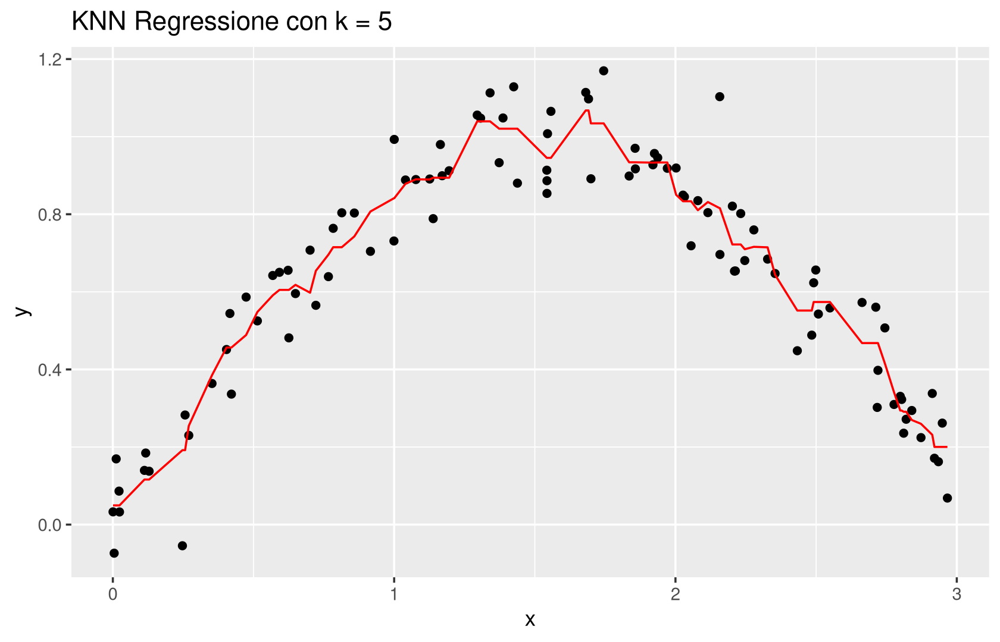
Prima di calcolare. Ripetiamo l’esempio con outlier di prima, ma usando KNN con \(k=5\) invece dell’interpolazione esatta. Ti aspetti che l’effetto del singolo outlier sulla curva sia più o meno marcato?
y_pred_out <- knn.reg(train = as.matrix(df_out$x), test = as.matrix(x), y = df_out$y, k = 5)$pred
df_pred_out <- data.frame(x = x, y = y_pred_out)
ggplot() +
geom_point(data = df_out, aes(x = x, y = y)) +
geom_line(data = df_pred_out, aes(x = x, y = y), colour = "red") +
ggtitle("KNN Regressione (k=5) sui dati con outlier")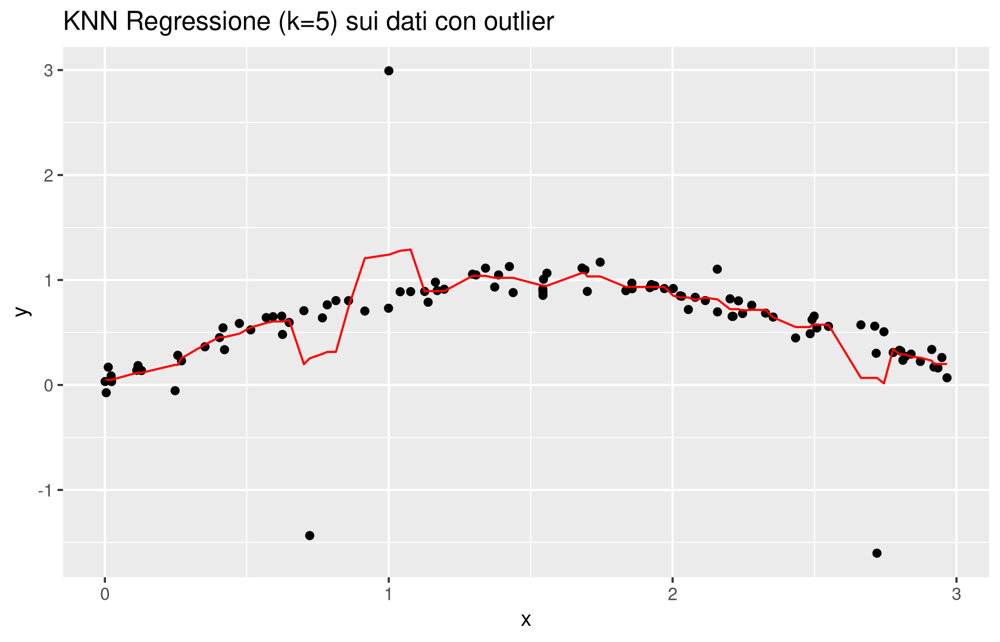
Con \(k=5\), un singolo outlier entra nella media di al più 5 finestre locali di vicinato: il suo effetto è diluito, non annullato. Ci si aspetta un piccolo abbassamento locale della curva nel punto dell’outlier (perché quel valore anomalo “pesa” per \(1/5\) nella media), seguito da un pronto ritorno verso l’andamento generale non appena l’outlier esce dalla finestra dei \(k\) vicini più prossimi. Questo è già un netto miglioramento rispetto all’interpolazione esatta, che seguiva l’outlier senza alcuna mitigazione.
KNN per la regressione eredita gli stessi limiti di KNN per la classificazione: dipende dalla scelta di \(k\), richiede di ricalcolare le distanze rispetto a tutto il training set per ogni nuova previsione (costoso quando \(n\) è grande) e degrada in alta dimensione. Vedremo più avanti nel capitolo che questi limiti motivano il passaggio a modelli parametrici.
In classificazione avevamo un indicatore naturale, l’accuratezza — la frazione di casi classificati correttamente: \[ Acc(h) = \frac{1}{n}\sum_i 1_{\{h(x_i)=y_i\}}. \] In regressione, però, chiedere che \(h(x_i)\) coincida esattamente con \(y_i\) è un criterio troppo grossolano: quasi nessuna previsione continua sarà mai identica al valore osservato, anche se il modello è ottimo. Un modello che prevede \(9.98\) quando il vero valore è \(10.00\) dovrebbe essere considerato “quasi giusto”, non “sbagliato” come uno che prevede \(-500\). Serve quindi una famiglia di funzioni di perdita più morbide della perdita 0-1.
Dato un modello \(h\) e osservazioni \(\{(x_i,y_i)\}\):
Perché non fermarsi al MSE? Il problema è di unità di misura: se \(y\) è espressa in metri, il MSE è espresso in metri quadrati, una quantità difficile da interpretare direttamente (quanto vale, intuitivamente, un errore di “4 metri quadrati”?). La radice quadrata riporta l’indicatore nella scala originaria: l’RMSE è espresso nella stessa unità di \(y\), ed è quindi molto più leggibile.
Quanto alla scelta tra RMSE e MAE, vale un parallelo che dovrebbe risultare familiare dal capitolo 1: la stessa contrapposizione tra media e mediana. Elevare al quadrato amplifica il contributo degli scarti grandi (un errore doppio pesa quattro volte tanto), quindi il MSE/RMSE è più sensibile agli outlier; il valore assoluto tratta tutti gli scarti in proporzione alla loro grandezza, quindi il MAE è più robusto. Non esiste una scelta “giusta” in assoluto: se un esperto di dominio chiede esplicitamente di minimizzare una particolare funzione di costo (ad esempio perché gli errori grandi hanno conseguenze economiche sproporzionate), quella loss va usata, anche se non è né MSE né MAE.
La scelta tra errore quadratico ed errore assoluto ha anche una storia: il metodo dei minimi quadrati, che vedremo tra poco, risale a Gauss; Laplace, contemporaneo di Gauss, aveva invece proposto di minimizzare la somma dei valori assoluti degli scarti, anticipando così la stima mediana-simile che oggi associamo alla loss \(\ell_1\). La scelta di Gauss ha avuto più successo storicamente soprattutto per un motivo pratico: porta a formule chiuse, “esplicite e maneggevoli” (come vedremo con OLS), mentre il criterio di Laplace è computazionalmente meno comodo. Questa stessa contrapposizione quadrato/valore assoluto era già comparsa nel capitolo 1 a proposito di media e mediana come minimizzatori di funzioni di perdita.
RMSE e MAE sono indicatori in scala: dipendono dall’unità di misura di \(y\) (se rimisurassimo \(y\) in centimetri anziché in metri, l’RMSE aumenterebbe di un fattore 100). A volte è utile un indicatore adimensionale, che permetta di confrontare la qualità di modelli su dataset diversi.
Il denominatore di \(R^2\) è (a meno del fattore \(1/n\), che si semplifica comunque tra numeratore e denominatore) proprio la varianza campionaria di \(y\): è l’errore quadratico del modello banale costante \(\bar h(x) = \bar y\), che prevede sempre la media, indipendentemente da \(x\). Il numeratore è l’errore quadratico del nostro modello \(h\). \(R^2\) confronta quindi \(h\) con questo termine di paragone: se \(h\) è un buon modello, il suo errore dovrebbe essere molto più piccolo di quello del modello costante, dunque il rapporto è vicino a \(0\) e \(R^2\) vicino a \(1\). Se \(h\) non fa meglio della media, \(R^2 \approx 0\); se addirittura fa peggio (è possibile, anche se raro in pratica), \(R^2\) diventa negativo.
\(R^2\) misura la frazione di varianza di \(y\) “spiegata” dal modello: un \(R^2=0.85\) significa che l’\(85\%\) della variabilità di \(y\) nel campione è catturata dal modello, il resto rimane nei residui. Il suo valore massimo è \(1\) (previsioni perfette).
Il punto più importante da ricordare su \(R^2\) è pratico: i comandi R più comuni (in particolare summary(lm(...)), che vedremo a breve) restituiscono un \(R^2\) calcolato sul training set. Un \(R^2\) alto sul training non garantisce affatto una buona generalizzazione: un modello sufficientemente flessibile può ottenere un \(R^2\) vicino a 1 sui dati usati per stimarlo e comportarsi malissimo su dati nuovi. \(R^2\), come RMSE e MAE, va sempre accompagnato dalla domanda “calcolato su quali dati?” — esattamente la stessa cautela già raccomandata per l’accuratezza in classificazione.
set.seed(1)
n <- 60
x_lab <- runif(n, 0, 3)
y_lab <- sin(x_lab) + rnorm(n, 0, 0.1)
train_idx <- sample(1:n, 40)
df_train <- data.frame(x = x_lab[train_idx], y = y_lab[train_idx])
df_test <- data.frame(x = x_lab[-train_idx], y = y_lab[-train_idx])
# modello volutamente troppo flessibile: polinomio di grado 15
modello <- lm(y ~ poly(x, 15, raw = TRUE), data = df_train)
r2_train <- summary(modello)$r.squared
pred_test <- predict(modello, newdata = df_test)
sse_test <- sum((pred_test - df_test$y)^2)
sst_test <- sum((df_test$y - mean(df_test$y))^2)
r2_test <- 1 - sse_test / sst_test
c(R2_training = r2_train, R2_test = r2_test)R2_training R2_test
0.9399229 0.7681091 Domande. Il polinomio di grado 15 è deliberatamente troppo complesso per soli 40 punti di training. Confronta i due valori di \(R^2\): cosa suggeriscono sulla capacità di generalizzazione del modello? Riesegui il codice riducendo il grado del polinomio a 2 o 3: cosa cambia nel divario tra \(R^2\) di training e di test?
summary(lm(...)) e conclude che il modello è eccellente. Quale domanda dovresti fargli prima di essere d’accordo?Fissata una funzione di perdita \(\ell(h(x),y)\) (quadratica, assoluta, o altra), valgono esattamente le stesse osservazioni fatte per la classificazione nel capitolo 4: l’obiettivo non è minimizzare l’errore sugli esempi già osservati, ma generalizzare su dati nuovi.
Sotto l’ipotesi che le coppie \((x_i,y_i)\) siano un campione i.i.d. con legge \(P(X,Y)\), l’errore di generalizzazione (o rischio) di un modello \(h\) è \[ L(h) := \mathbb{E}[\ell(h(X),Y)]. \] Non essendo nota \(P(X,Y)\), \(L(h)\) non è calcolabile direttamente. Si stima con l’errore di test \[ L_{test}(h) = \frac{1}{m}\sum_{i=1}^m \ell(h(x_i^{test}), y_i^{test}) \] su un insieme di dati \(\{(x_i^{test},y_i^{test})\}\) non usato per stimare \(h\).
Questa è esattamente la stessa impostazione della classificazione: cambia solo la loss (da 0-1 a quadratica, assoluta, ecc.), non la logica.
Come nel capitolo 4, per una stima più affidabile — e per scegliere iperparametri come il \(k\) di KNN senza “consumare” un secondo test set indipendente — si ricorre alla validazione incrociata (cross-validation) sul solo training set. Le due varianti principali sono:
LOO-CV è il caso limite del \(k\)-fold con \(k=n\): ogni “fold” contiene un solo punto. È computazionalmente più costosa (richiede \(n\) addestramenti) ma per KNN, come vedremo nell’esempio, resta perfettamente gestibile su dataset di dimensioni moderate. Il \(k\)-fold con \(k\) più piccolo (5 o 10, tipicamente) è la scelta più comune quando \(n\) è grande, per motivi di costo computazionale — è la variante discussa con più dettaglio nel capitolo sulla classificazione.
library(caret)
set.seed(42)
train_control <- trainControl(method = "LOOCV")
modello_cv <- train(y ~ x, data = df, method = "knn",
trControl = train_control,
tuneGrid = data.frame(k = 1:10))
plot(modello_cv)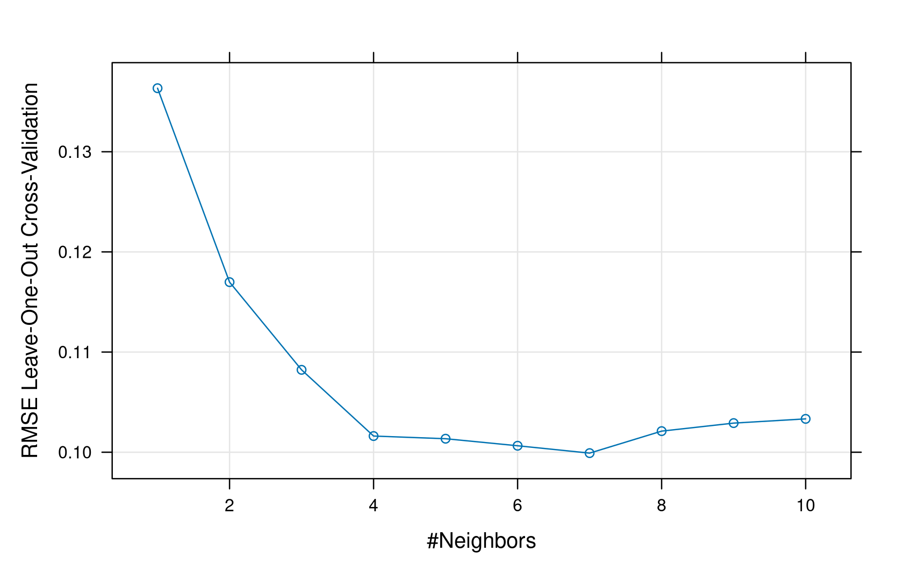
Il grafico mostra l’errore di LOO-CV (una stima dell’errore di generalizzazione) al variare di \(k\) da 1 a 10. Come nel capitolo 4, la scelta del modello finale dovrebbe basarsi su questa curva, non sull’errore di training, che sistematicamente favorisce i modelli più flessibili (i.e. \(k\) piccolo).
Estendiamo l’analisi CV all’intero intervallo \(k=1,\ldots,100\) e confrontiamo l’errore di training con l’errore di cross-validation. Le due curve, viste assieme, raccontano una storia più ricca del solo “quale \(k\) scegliere”.
set.seed(42)
modello_cv100 <- train(y ~ x, data = df, method = "knn",
trControl = train_control,
tuneGrid = data.frame(k = 1:100))
plot(modello_cv100, col = "blue")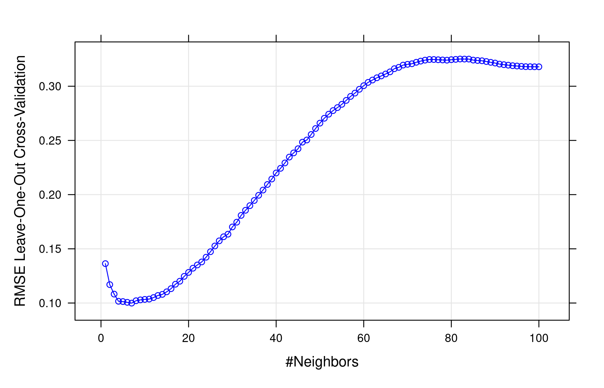
Prima di calcolare. Guardando solo i primi 10 valori di \(k\) (l’esempio precedente), l’errore CV sembrava decrescere sempre. Estendendo a \(k=100\), ti aspetti che continui a decrescere indefinitamente, o che a un certo punto ricominci a crescere?
train_error <- numeric(100)
for (k in 1:100) {
y_pred_k <- knn.reg(train = as.matrix(df$x), test = as.matrix(x), y = df$y, k = k)$pred
train_error[k] <- sqrt(mean((df$y - y_pred_k)^2))
}
df_error <- data.frame(k = 1:100,
train_error = train_error,
cv_error = modello_cv100$results$RMSE)
ggplot(df_error, aes(x = k)) +
geom_line(aes(y = train_error, colour = "Training")) +
geom_point(aes(y = train_error, colour = "Training"), shape = 1) +
geom_line(aes(y = cv_error, colour = "Cross-validation")) +
geom_point(aes(y = cv_error, colour = "Cross-validation"), shape = 1) +
ylab("RMSE") +
ggtitle("Training vs CV error al variare di k") +
scale_colour_manual("", values = c("Training" = "violet", "Cross-validation" = "blue")) +
theme_minimal()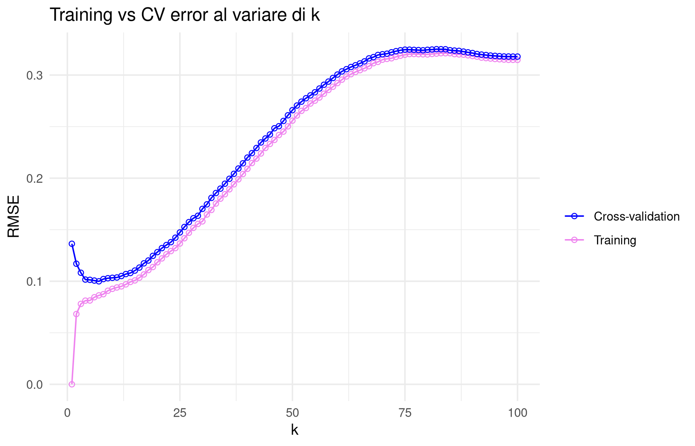
Due fenomeni, entrambi già osservati qualitativamente nel capitolo 4 ma qui particolarmente nitidi:
Una regola pratica, tipica della statistica classica, è: fermarsi al primo valore di \(k\) in cui la curva di cross-validation smette di scendere e ricomincia a salire, e scegliere lì il valore ottimale dell’iperparametro. Questo andamento a “U” era già presente, in linea di principio, anche per KNN in classificazione (capitolo 4), ma lì era meno marcato; nella regressione è tipicamente molto più visibile.
Le due situazioni estreme si interpretano così:
Il valore di \(k\) ottimale è quello che minimizza l’errore di cross-validation (o di test), un compromesso tra i due estremi: è il classico compromesso bias-varianza (bias-variance tradeoff).
Dalla forma delle due curve si possono trarre indicazioni operative:
Non esiste alcun teorema che imponga a tutti i modelli statistici di esibire questo compromesso. Reti neurali profonde e random forest, in particolare, tipicamente non mostrano il classico dilemma bias-varianza nella forma appena descritta (pur avendo altre complicazioni pratiche in fase di addestramento). Il compromesso descritto in questa sezione è un fenomeno che si osserva spesso, specialmente nei modelli più semplici come KNN, ma non è una legge universale.
L’evidenza empirica della sezione precedente — overfitting/underfitting, curva a “U” — può essere resa rigorosa. Quello che segue è uno dei pochi risultati con statuto di teorema in questo corso (non un’euristica, non una regola pratica): per la loss quadratica, l’errore di generalizzazione si decompone esattamente in tre contributi additivi.
Per la loss quadratica, l’errore di generalizzazione di un modello \(h\) si decompone come \[ L(h) = \underbrace{\text{Bias}^2}_{\text{errore sistematico}} + \underbrace{\text{Varianza}}_{\text{errore da variabilità}} + \underbrace{\text{Rumore}}_{\text{errore intrinseco}}, \] dove Bias² misura l’incapacità del modello di rappresentare la relazione tra input e output, Varianza misura la sensibilità del modello alle variazioni nei dati di training, e Rumore è la componente intrinseca ai dati, non eliminabile da nessun modello.
Una decomposizione analoga esiste anche per la loss 0-1 della classificazione, ma la sua forma è meno pulita da scrivere; per questo la si presenta qui, nel contesto della regressione, dove il calcolo è particolarmente trasparente.
La dimostrazione si basa su due risultati elementari di teoria della probabilità.
Lemma 1 — “Teorema di Pitagora” per variabili aleatorie. Siano \(U,V\) variabili aleatorie reali e sia \(I\) un’informazione tale che, condizionatamente a \(I\), \(U\) è nota (cioè costante). Allora \[ \mathbb{E}\big[(V-U)^2 \mid I\big] = \mathbb{E}\big[(V-\mathbb{E}[V\mid I])^2 \mid I\big] + \big(\mathbb{E}[V\mid I] - U\big)^2. \]
Lemma 2 — Legge della probabilità totale per il valor medio. Per ogni variabile aleatoria \(V\) e informazione \(I\), \[ \mathbb{E}[V] = \mathbb{E}\big[\mathbb{E}[V\mid I]\big]. \]
Il nome “teorema di Pitagora” non è decorativo. Pensiamo a \(U\) come a un punto fisso (noto, condizionatamente a \(I\)) e a \(V\) come a una variabile aleatoria; \(\mathbb{E}[V\mid I]\) è, in un senso preciso, la “proiezione” di \(V\) più vicina a \(U\) in termini di errore quadratico medio. La quantità \(\mathbb{E}[(V-U)^2\mid I]\) è l’“ipotenusa al quadrato”: si decompone nella somma dei due “cateti al quadrato”
Non è un caso che nella statistica di base lo stesso lemma, applicato allo stimatore di un parametro, dia la scomposizione dell’errore quadratico medio di uno stimatore in varianza più bias al quadrato: qui lo applichiamo due volte, con due scelte diverse dell’informazione \(I\), per ottenere tutti e tre i termini della decomposizione dell’errore di generalizzazione.
Assumiamo, come nel resto del capitolo, che:
Partiamo dalla definizione di errore di generalizzazione, rendendo esplicita la dipendenza di \(h\) dal training set \(D\): \[ L(h) = \mathbb{E}_{X,D,Y}\Big[\big(h(X;D)-Y\big)^2\Big], \] dove il valore atteso è calcolato rispetto a tutte le possibili realizzazioni del punto di test \((X,Y)\) e del training set \(D\).
Passo 1 — estrazione del rumore. Introduciamo l’informazione \(I=(X,D)\): “facciamo finta” di conoscere sia il punto di test \(X\) sia l’intero training set \(D\). Con questa informazione, \(U := h(X;D)\) è una quantità nota (deterministica, dato \(I\)), mentre \(V:=Y\) resta aleatoria (perché anche conoscendo \(X\) e \(D\) non conosciamo esattamente \(Y\), a causa del rumore). Applicando il Lemma 1 con \(U=h(X;D)\) e \(V=Y\): \[ \mathbb{E}\big[(h(X;D)-Y)^2 \mid X,D\big] = \underbrace{\mathbb{E}\big[(Y-\mathbb{E}[Y\mid X,D])^2 \mid X,D\big]}_{\text{Rumore}} + \big(\mathbb{E}[Y\mid X,D] - h(X;D)\big)^2. \]
Il primo termine non dipende mai da \(h\): qualunque sia il modello scelto, per quanto sofisticato, questa quantità resta la stessa. Per questo lo chiamiamo Rumore: rappresenta la variabilità di \(Y\) attorno al suo valore medio condizionato, cioè quello che nessun modello può eliminare, per quanto ben stimato.
Poiché training set e punto di test sono indipendenti, condizionare a conoscere anche \(D\) non cambia il valore atteso di \(Y\) dato \(X\): \[ \mathbb{E}[Y\mid X,D] = \mathbb{E}[Y\mid X] =: h_B(X), \] dove \(h_B\) è il cosiddetto modello ottimale (o bayesiano): la miglior previsione possibile se conoscessimo esattamente \(P(X,Y)\), calcolabile solo in teoria. Il secondo termine del Passo 1 diventa quindi \(\big(h_B(X) - h(X;D)\big)^2\), che dipende ancora sia da \(X\) sia da \(D\).
Applicando il Lemma 2 (probabilità totale per il valor medio) rispetto all’informazione \((X,D)\) si ottiene \[ L(h) = \mathbb{E}_{X,D}\Big[\text{Rumore}(X,D)\Big] + \mathbb{E}_{X,D}\Big[\big(h_B(X)-h(X;D)\big)^2\Big]. \]
Il termine di rumore, mediato su \(X\) e \(D\), resta separato dal resto della decomposizione e non richiede ulteriore lavoro: è il termine Rumore definitivo.
Passo 2 — decomposizione in bias² e varianza. Resta da lavorare sul secondo termine, \(\mathbb{E}_{X,D}\big[(h_B(X)-h(X;D))^2\big]\). Osserviamo che \(h_B(X)\) dipende solo da \(X\), mentre \(h(X;D)\) dipende sia da \(X\) sia da \(D\). Introduciamo ora l’informazione \(I=X\) soltanto (conosciamo il punto di test, non il training set), e applichiamo di nuovo il Lemma 1, questa volta con \(U := h_B(X)\) (costante, nota conoscendo \(X\)) e \(V := h(X;D)\) (ancora aleatoria, perché \(D\) non è nota): \[ \mathbb{E}\big[(h(X;D)-h_B(X))^2 \mid X\big] = \underbrace{\mathbb{E}\big[(h(X;D)-\mathbb{E}_D[h(X;D)\mid X])^2 \mid X\big]}_{\text{Varianza}} + \underbrace{\big(\mathbb{E}_D[h(X;D)\mid X] - h_B(X)\big)^2}_{\text{Bias}^2}. \]
Applicando infine il Lemma 2 anche rispetto a \(X\), e riunendo tutti i pezzi, otteniamo la decomposizione cercata: \[ L(h) = \underbrace{\mathbb{E}_X\Big[\big(\mathbb{E}_D[h(X;D)\mid X] - h_B(X)\big)^2\Big]}_{\text{Bias}^2} \;+\; \underbrace{\mathbb{E}_X\Big[\mathbb{E}_D\big[(h(X;D)-\mathbb{E}_D[h(X;D)\mid X])^2 \mid X\big]\Big]}_{\text{Varianza}} \;+\; \underbrace{\mathbb{E}_{X,D}[\text{Rumore}(X,D)]}_{\text{Rumore}}. \]
Un modo classico di visualizzare i quattro casi (bias, varianza) alto/basso è il bersaglio: immaginiamo di “sparare” ripetutamente (una volta per ogni training set possibile) verso il centro, che rappresenta il valore vero \(y\).
library(gridExtra)
create_target <- function(bias, variance) {
radius <- c(1, 2, 3, 4)
df_t <- expand.grid(x = seq(-4, 4, length.out = 100), y = seq(-4, 4, length.out = 100))
df_t$dist <- sqrt(df_t$x^2 + df_t$y^2)
df_t$target <- cut(df_t$dist, breaks = c(-Inf, radius),
labels = c("Dentro", "Primo cerchio", "Secondo cerchio", "Terzo cerchio"),
right = FALSE)
colors <- c("green", "yellow", "orange", "red")
ggplot(df_t, aes(x, y, fill = target)) +
geom_raster(interpolate = TRUE) +
scale_fill_manual(values = colors, guide = "none") +
geom_point(aes(x = 0, y = 0), color = "black", size = 3) +
labs(title = paste("Bias:", bias, "- Varianza:", variance), x = "", y = "") +
coord_fixed() +
theme_void() +
theme(plot.title = element_text(hjust = 0.5))
}
grid.arrange(create_target("Alto", "Alto"), create_target("Alto", "Basso"),
create_target("Basso", "Alto"), create_target("Basso", "Basso"),
ncol = 2)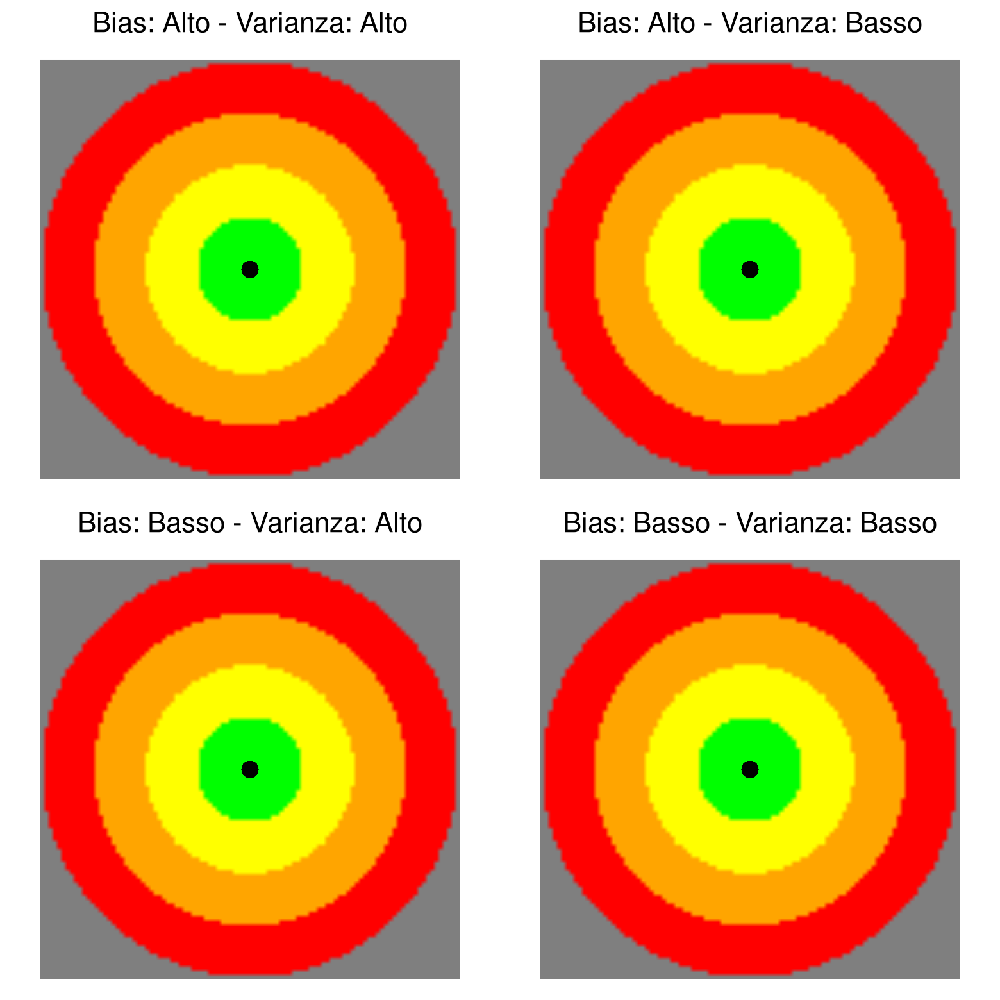
La decomposizione è un teorema esatto per la loss quadratica sotto le ipotesi elencate (dati i.i.d., training/test indipendenti), non una regola empirica. Ciò che resta empirico è l’osservazione che, al variare di un iperparametro come \(k\), molti modelli (ma non tutti — si pensi di nuovo a reti neurali profonde e random forest) mostrano bias decrescente e varianza crescente con la complessità, dando origine al tipico compromesso a “U” osservato nella sezione precedente.
KNN, per quanto semplice ed efficace in molte situazioni, ha tre limiti strutturali: (1) è computazionalmente costoso quando \(n\) è grande, perché ogni previsione richiede di scandire (concettualmente) l’intero training set; (2) soffre della curse of dimensionality, perché si basa sulla distanza euclidea; (3) — forse il limite più importante nel lungo periodo — è poco interpretabile: la ricetta “guarda i \(k\) vicini e fai la media” non offre alcuna spiegazione del perché la relazione tra \(x\) e \(y\) abbia una certa forma. È lo stesso limite di interpretabilità che, sotto altra forma, affligge modelli moderni come le reti neurali.
KNN e i modelli parametrici hanno anche una differenza concettuale nella gestione di training e test: in KNN le due fasi non sono nettamente separate (l’intero training set deve essere disponibile anche al momento della previsione), mentre nei modelli parametrici la fase di stima dei parametri (training) è completamente distinta dalla fase di previsione (test), che usa solo il vettore di parametri stimato.
Un modello parametrico per la regressione assume che \(h\) appartenga a una famiglia di funzioni indicizzata da un vettore di parametri \(\theta \in \mathbb{R}^p\): \[ h(x;\theta), \qquad \theta \in \mathbb{R}^p. \] Il procedimento si articola in due fasi distinte: (1) stima dei parametri (training del modello) a partire dai dati osservati; (2) previsione su nuovi dati, usando il modello con i parametri stimati.
L’idea chiave è ridurre la dipendenza da un intero training set (potenzialmente enorme) a un vettore finito \(\theta \in \mathbb{R}^p\), tipicamente con \(p \ll n\).
“Tipicamente \(p \ll n\)” è la situazione classica, ma non universale: esistono modelli moderni (in particolare in machine learning) che operano nel regime opposto, con \(p\) confrontabile o addirittura maggiore di \(n\). Questo apre questioni statistiche delicate (come evitare l’overfitting quando ci sono più parametri che osservazioni) che esulano dagli obiettivi di questo corso, ma è utile sapere che l’assunzione \(p\ll n\) non è sempre valida.
Il metodo dei minimi quadrati (Ordinary Least Squares, OLS) sceglie, tra tutti i possibili valori di \(\theta\), quello che minimizza l’errore quadratico medio sul training set: \[ \theta_{OLS} = \arg\min_{\theta \in \mathbb{R}^p} \frac{1}{n}\sum_{i=1}^n \big(h(x_i;\theta)-y_i\big)^2. \] La previsione su un nuovo punto \(x\) è \(x \mapsto h(x;\theta_{OLS})\).
Il metodo può essere applicato a qualunque modello parametrico — lineare, polinomiale, ma anche a modelli non lineari come le reti neurali — e risale, storicamente, a Gauss.
Supponiamo che la relazione tra \(x\) e \(y\) sia della forma \[ Y = h(X;\theta) + \varepsilon, \qquad \varepsilon \sim \mathcal{N}(0,\sigma^2), \quad \varepsilon \perp X, \] con \(\varepsilon\) (il residuo) gaussiano e indipendente da \(X\). Dato un training set i.i.d. \(D=\{(x_i,y_i)\}_{i=1}^n\), la sua verosimiglianza rispetto a \(\theta\) è \[ \mathcal{L}(\theta;D) = \prod_{i=1}^n p(Y=y_i, X=x_i\mid\theta). \]
Sviluppiamo il prodotto usando la regola della probabilità composta, \(p(X,Y\mid\theta) = p(Y\mid X,\theta)\,p(X\mid\theta)\). Poiché \(\theta\) modella solo la relazione tra \(X\) e \(Y\) e non la distribuzione marginale di \(X\), è naturale assumere l’indipendenza \(\theta \perp X\), cioè \(p(X\mid\theta)=p(X)\). Sotto il modello \(Y=h(X;\theta)+\varepsilon\), conoscendo \(x_i\) e \(\theta\), l’unica fonte di aleatorietà residua è \(\varepsilon\), e quindi \[ p(Y=y_i\mid X=x_i,\theta) = p_\varepsilon(y_i - h(x_i;\theta)) = \frac{1}{\sqrt{2\pi\sigma^2}}\exp\left(-\frac{(y_i-h(x_i;\theta))^2}{2\sigma^2}\right). \] Mettendo insieme i pezzi, \[ \mathcal{L}(\theta;D) = \prod_{i=1}^n \frac{1}{\sqrt{2\pi\sigma^2}}\exp\left(-\frac{(y_i-h(x_i;\theta))^2}{2\sigma^2}\right) p(X=x_i). \] Massimizzare \(\mathcal{L}(\theta;D)\) rispetto a \(\theta\) (i fattori \(p(X=x_i)\) non dipendono da \(\theta\) e non contano nell’ottimizzazione) equivale a minimizzare la somma degli esponenti al quadrato, cioè esattamente il criterio dei minimi quadrati: \[ \theta_{MLE} = \arg\max_{\theta\in\mathbb{R}^p} \mathcal{L}(\theta;D) = \arg\min_{\theta\in\mathbb{R}^p}\sum_{i=1}^n (y_i - h(x_i;\theta))^2 = \theta_{OLS}. \]
Questo risultato non è un mero “abbellimento” teorico: stabilisce un legame diretto con l’approccio alla stima già visto per la classificazione tramite classificatori generativi (capitolo 5). L’ipotesi di gaussianità del residuo, in particolare, sarà cruciale nel capitolo 7 per costruire intervalli di confidenza sui parametri e sulle previsioni: è proprio l’assunzione probabilistica che rende possibile, non solo la stima puntuale \(\theta_{OLS}\), ma anche la quantificazione dell’incertezza attorno ad essa.
L’apparato OLS/MLE lascia aperti tre problemi, che motivano il contenuto dei prossimi capitoli:
Una prima soluzione a questi problemi, che vale la pena studiare in dettaglio prima di affrontare modelli più generali, è restringere l’attenzione ai modelli di regressione lineare.
A differenza del resto del capitolo, questa sezione finale è ricostruita solo dalle slide: la lezione si è fermata subito dopo “problemi del metodo”, rimandando la trattazione pratica dei modelli lineari alla lezione successiva (capitolo 7, dove viene sviluppata in dettaglio, insieme alla notazione matriciale e alla quantificazione dell’incertezza). Qui presentiamo comunque la definizione generale e gli esempi già anticipati sulle slide, perché chiudono naturalmente il percorso di questo capitolo: dal problema generale della regressione, a KNN, ai modelli parametrici, fino al primo esempio concreto di modello parametrico — quello lineare.
Tra tutti i possibili modelli parametrici, i modelli lineari nei parametri occupano un posto speciale: sono i più semplici da stimare (il problema di minimizzazione di OLS ammette, come vedremo, soluzione esplicita), i più interpretabili, e costituiscono la base su cui si costruiscono estensioni più sofisticate (regressione polinomiale, con interazioni, regolarizzata — capitolo 8).
Un modello di regressione parametrico \(h(x;\theta)\) è lineare se ha la forma \[ h(x;\theta) = \theta_0 + \sum_{j=1}^p \theta_j\, \phi_j(x), \] dove \(\phi_j: F \to \mathbb{R}\) sono funzioni note (dette funzioni base, o feature), che possono anche essere trasformazioni non lineari delle variabili di input.
Il modello è lineare nei parametri \(\theta_j\), non necessariamente nelle variabili originarie \(x\): le funzioni \(\phi_j\) possono essere arbitrariamente non lineari (potenze, logaritmi, prodotti di variabili, ecc.). Questa distinzione è cruciale e spesso fonte di confusione: un modello polinomiale, ad esempio, è “lineare” in questo senso tecnico pur descrivendo relazioni curve.
Riprendiamo il dataset sintetico \(y=\sin(x)+\text{rumore}\) e stimiamo modelli lineari di grado crescente con lm() e poly().
modello_lineare <- lm(y ~ poly(x, 1, raw = TRUE), data = df)
pred_lineare <- predict(modello_lineare, newdata = data.frame(x = x))
ggplot() +
geom_point(data = df, aes(x = x, y = y)) +
geom_line(data = data.frame(x = x, y = pred_lineare), aes(x = x, y = y), colour = "red") +
ggtitle("Regressione lineare semplice")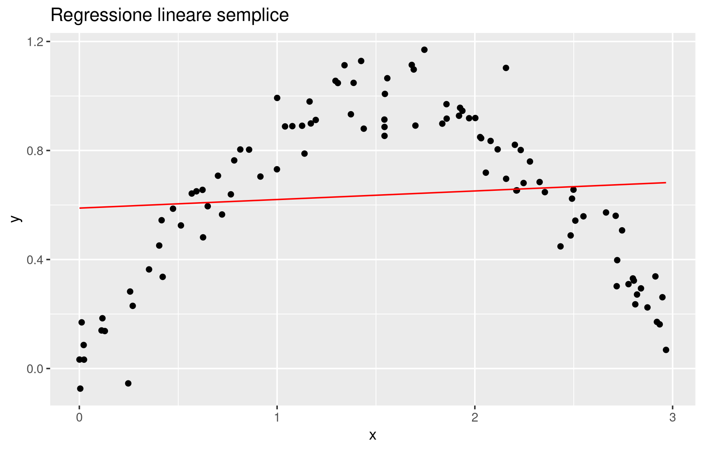
Prima di calcolare. La relazione vera è \(\sin(x)\) su un intervallo \([0,3]\), che ha una curvatura marcata. Ti aspetti che un polinomio di grado 1 (una retta) catturi bene questa forma? E un polinomio di grado molto alto?
gradi <- c(1, 2, 30)
df_pred_poly <- data.frame(x = x)
for (p in gradi) {
modello_p <- lm(y ~ poly(x, p, raw = TRUE), data = df)
df_pred_poly[[paste0("y_deg_", p)]] <- predict(modello_p, newdata = data.frame(x = x))
}
ggplot() +
geom_point(data = df, aes(x = x, y = y)) +
geom_line(data = df_pred_poly, aes(x = x, y = y_deg_1), colour = "red") +
geom_line(data = df_pred_poly, aes(x = x, y = y_deg_2), colour = "blue") +
geom_line(data = df_pred_poly, aes(x = x, y = y_deg_30), colour = "violet") +
ggtitle("Regressione polinomiale di gradi 1 (rosso), 2 (blu), 30 (viola)")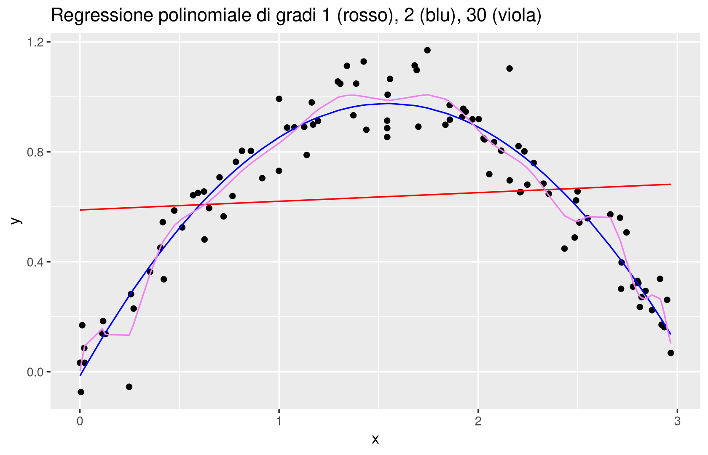
Dopo il calcolo. Il grado 1 sottostima la curvatura (bias evidente); il grado 30 la insegue eccessivamente, producendo oscillazioni spurie soprattutto agli estremi dell’intervallo — un comportamento del tutto analogo all’overfitting già osservato con KNN a \(k\) piccolo. Il grado del polinomio gioca qui lo stesso ruolo di iperparametro di complessità che aveva \(k\) in KNN.
Esattamente come per \(k\) in KNN, il grado “giusto” del polinomio si sceglie con cross-validation, non guardando l’adattamento sul training set.
library(boot)
set.seed(42)
cv_rmse <- sapply(1:10, function(p) {
modello_glm <- glm(y ~ poly(x, degree = p, raw = TRUE), data = df)
cv_res <- cv.glm(df, modello_glm, K = nrow(df)) # LOOCV
sqrt(cv_res$delta[1])
})
ggplot(data.frame(grado = 1:10, RMSE = cv_rmse), aes(x = grado, y = RMSE)) +
geom_line(colour = "blue") +
geom_point(shape = 1, colour = "blue") +
ggtitle("LOOCV RMSE al variare del grado del polinomio") +
xlab("Grado del polinomio") + ylab("LOOCV RMSE") +
theme_minimal()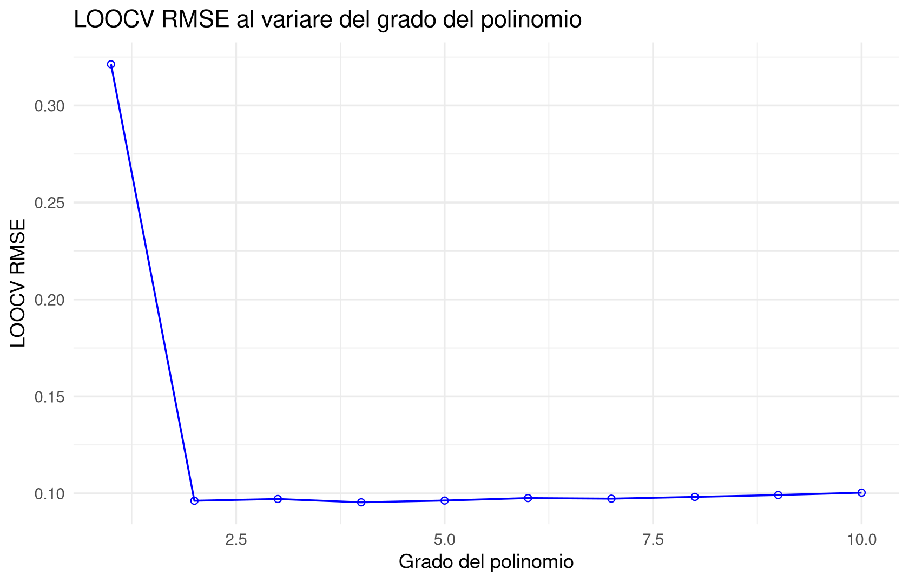
cv.glm() (pacchetto boot) esegue LOO-CV automaticamente su un modello adattato con glm(); $delta[1] restituisce l’errore quadratico medio stimato per validazione incrociata. La stessa identica logica della curva a “U” per \(k\) in KNN si applica qui al grado del polinomio: gradi troppo bassi danno bias alto (underfitting), gradi troppo alti danno varianza alta (overfitting), e la cross-validation indica un compromesso.
Nel caso \(p=1\), \(h(x;\theta)=\theta_0+\theta_1 x\), i due parametri hanno un’interpretazione diretta: \(\theta_0\) è l’intercetta (il valore di \(h\) per \(x=0\)), \(\theta_1\) è la pendenza (la variazione di \(h\) per un’unità di variazione di \(x\)).
Le stime OLS dei due parametri, nel caso della regressione lineare semplice, hanno forma chiusa: \[ \theta_{OLS,1} = \operatorname{cor}(x,y)\, \frac{\sigma_y}{\sigma_x}, \qquad \theta_{OLS,0} = \bar y - \theta_{OLS,1}\, \bar x, \] dove \(\operatorname{cor}(x,y)\) è la correlazione campionaria, \(\sigma_x,\sigma_y\) le deviazioni standard campionarie e \(\bar x,\bar y\) le medie campionarie.
Il problema di minimizzazione è \[ \min_{\theta_0,\theta_1} \sum_{i=1}^n (y_i-\theta_0-\theta_1 x_i)^2 = \min_{\theta_0}\left(\min_{\theta_1}\sum_{i=1}^n (y_i-\theta_0-\theta_1 x_i)^2\right). \] Annullando la derivata rispetto a \(\theta_0\) a \(\theta_1\) fissato, si trova che \(\theta_0\) deve essere la media dei residui \(y_i-\theta_1 x_i\), cioè \[ \theta_0 = \bar y - \theta_1 \bar x. \] Sostituendo questa espressione e annullando ora la derivata rispetto a \(\theta_1\), \[ 0 = \frac{d}{d\theta_1}\sum_{i=1}^n (y_i-\theta_0-\theta_1 x_i)^2 = -2\sum_{i=1}^n (y_i-\theta_0-\theta_1 x_i)\, x_i, \] si ottiene, dopo aver raccolto i termini e riconosciuto covarianza e varianza campionarie nelle somme risultanti, \[ \theta_1 = \frac{\operatorname{cov}(x,y)}{\operatorname{var}(x)} = \operatorname{cor}(x,y)\,\frac{\sigma_y}{\sigma_x}. \]
Il passaggio finale (da \(\operatorname{cov}(x,y)/\operatorname{var}(x)\) a \(\operatorname{cor}(x,y)\,\sigma_y/\sigma_x\)) usa semplicemente la definizione \(\operatorname{cor}(x,y) = \operatorname{cov}(x,y)/(\sigma_x\sigma_y)\). La derivazione completa in notazione matriciale, valida per il caso generale con \(p\) predittori, sarà l’oggetto del capitolo 7.
theta1_formula <- cor(df$x, df$y) * sd(df$y) / sd(df$x)
theta0_formula <- mean(df$y) - theta1_formula * mean(df$x)
modello_semplice <- lm(y ~ x, data = df)
data.frame(
parametro = c("theta_0 (intercetta)", "theta_1 (pendenza)"),
formula_chiusa = c(theta0_formula, theta1_formula),
lm_R = coef(modello_semplice)
) parametro formula_chiusa lm_R
(Intercept) theta_0 (intercetta) 0.58865966 0.58865966
x theta_1 (pendenza) 0.03146096 0.03146096La formula chiusa e lm() devono restituire (a meno di arrotondamenti numerici trascurabili) esattamente gli stessi valori: non stiamo “implementando OLS da zero”, ma verificando che la formula analitica derivata sopra coincida con ciò che lm() calcola internamente con un algoritmo numerico più generale.
Gli esercizi seguenti riusano il dataset sintetico del capitolo (df, generato con set.seed(42)) e le funzioni R già introdotte (FNN::knn.reg, caret::train, lm(), boot::cv.glm). L’obiettivo, come sempre in questo libro, non è scrivere codice nuovo ma eseguire, confrontare e interpretare.
df$y per 100). Quali indicatori cambiano numericamente e quali no? Perché?set.seed() diverso e \(y = x^2 + \text{rumore}\) invece di \(\sin(x)+\text{rumore}\). Esegui caret::train() con LOO-CV per KNN (\(k=1,\ldots,50\)) e separatamente la selezione del grado polinomiale con boot::cv.glm() (gradi \(1,\ldots,6\)). Quale grado polinomiale ti aspetti che risulti ottimale, sapendo come è stato generato il dataset? Il risultato della cross-validation conferma la tua aspettativa?lm(y ~ poly(x, 1)) (lineare semplice) e confronta \(\theta_{OLS,1}\) calcolato con la formula chiusa cor(x,y)*sd(y)/sd(x) e con coef(lm(y~x)). Ripeti standardizzando prima x con scale(): la pendenza stimata cambia? È un risultato atteso, vista la formula chiusa?